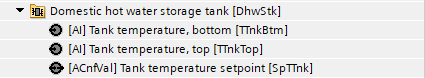
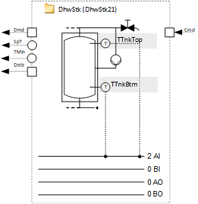
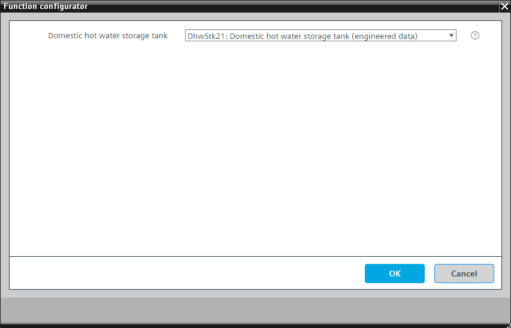
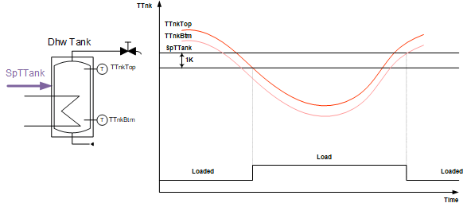
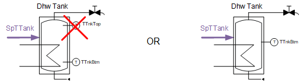
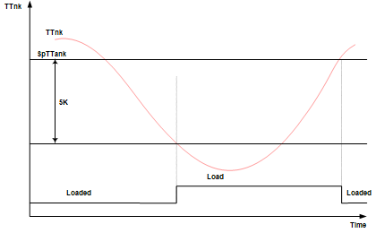

[DhwStk21] 生活热水储罐
Program block, name / node subtype: [DhwStk21] Domestic hot water storage tank
Library hierarchy: Heating equipment
Family: DhwStk
项目树 | 图表 |
|---|---|
|
 |  |
Configurator


程序块存储在没有 I/Os. 的库中 使用auto-create and auto-connect函数创建 I/Os 和 /or 将它们连接到接口块，例如 R_A、CMD_B。或者，从包含库中预定义 I/Os 的文件夹中取出 I/Os，并从工厂中取出 /or，并将它们连接到接口块。
储罐充注
由于使用内部热交换器进行充电，因此预计不会出现明显的温度分层。
计划使用两个传感器：一个传感器位于储罐的顶部，一个传感器位于储罐的底部区域。这两个温度决定充电状态。

Key
|
SpTTank | 储罐温度设定值 |
TTnk | 罐体温度 |
TTnkTop | 罐体温度，顶部 |
TTnkBtm | 罐体温度，底部 |
充电需要：
如果高温传感器低于设定值减去开关差（例如 1 K），则储罐已放电且需要充电。
带电：
如果两个温度传感器都高于设定点，则储罐充电。
通过储罐充电电路对储罐进行充电。
特例：
如果顶部传感器发生故障或只有一个传感器（位于储罐中部并作为 TTnkBtm 连接），开关差会自动增加，例如增加 5 K。


姓名 | 描述 | 类型 | 报警/通知类 | 趋势/类型 | |
|---|---|---|---|---|---|
TTnkTop | Tank temperature, top | AI：模拟输入 | No | 是的，3 | |
TTnkBtm | Tank temperature, bottom | AI：模拟输入 | No | 是的，3 | |
SpTTnk | Tank temperature setpoint | ACnfVal: Analog configuration value | No | No | |